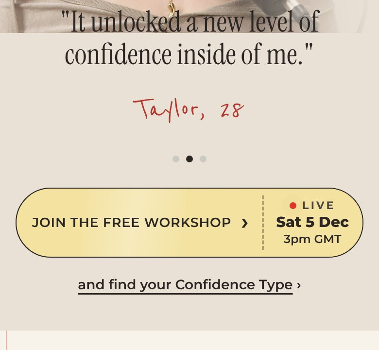
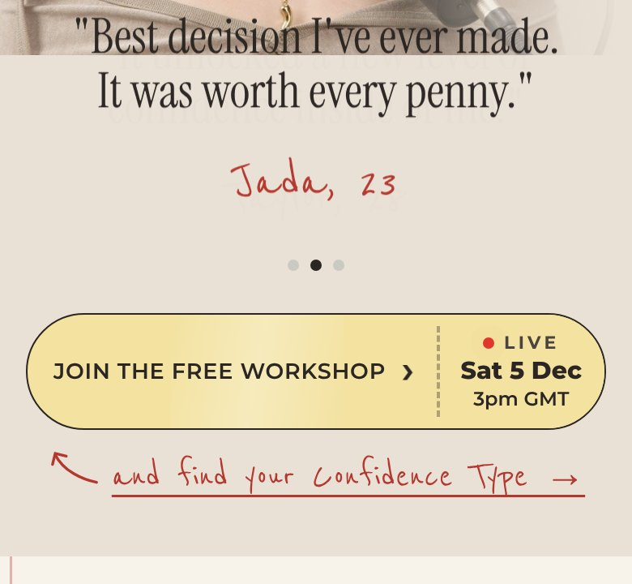

Quiz link options ☆
Three ways to add "and find your Confidence Type" under the workshop button. Each one links to the quiz. Shown as they look on a phone.

1Clean text link
Underlined with a small arrow. The most subtle of the three.

2Handwritten pen note
Red pen, a hand-drawn arrow pointing up at the workshop button. Matches the journal feel best.

3Butter highlighter
A highlighter swipe and underline, plus "(2 mins)" so it feels quick.